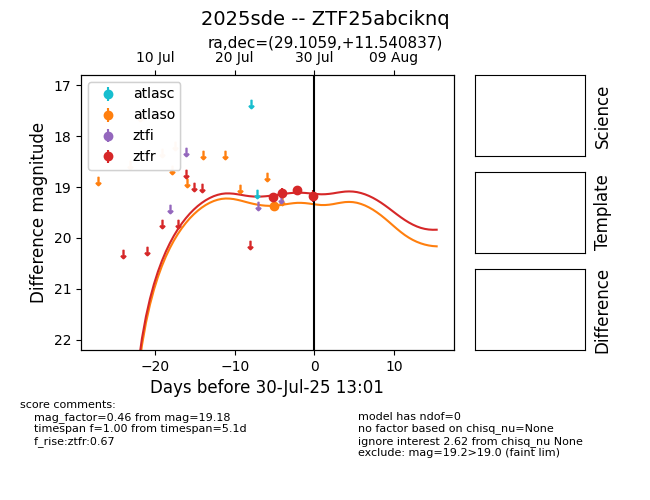

Target 2025sde at 2025-08-19 21:22, see:
FINK: fink-portal.org/ZTF25abciknq
Lasair: lasair-ztf.lsst.ac.uk/objects/ZTF25abciknq
ALeRCE: alerce.online/object/ZTF25abciknq
TNS: wis-tns.org/object/2025sde
YSE: ziggy.ucolick.org/yse/transient_detail/2025sde
alt names
ZTF25abciknq (ztf,fink)
2025sde (tns,yse)
ATLAS25ikt (atlas)
PS25giz (panstarrs)
coordinates:
equatorial (ra, dec) = (29.1059,+11.54084)
galactic (l, b) = (147.2358,-48.24047)
photometry
last atlasc=19.41, atlaso=19.16, ps1::w=20.03, ztfg=19.74, ztfr=19.33
1 atlasc, 2 atlaso, 4 ps1::w, 2 ztfg, 7 ztfr detections
